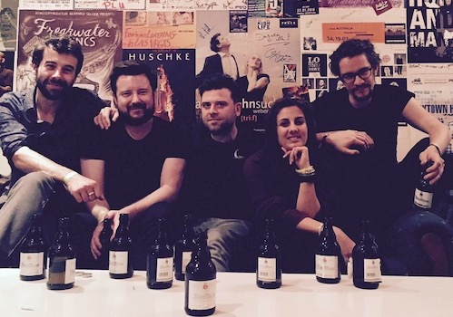

"massive, pastorally apocalyptic music" - NME
Her Name Is Calla are an English post-rock band based in the English cities of Leicester and Leeds, England.
After playing live throughout the United Kingdom to much critical acclaim, touring with iLiKETRAiNS and The Twilight Sad, Cult of luna, Maybeshewill and Sólstafir, they released their debut album, The Heritage, in 2008, which was also positively acclaimed, and was followed by a well-received headlining tour. The album lasts over 50 minutes, despite only containing six tracks.
In February 2009, they announced their arrival on the German label, Denovali Records. Denovali re-released The Heritage on vinyl in late 2009.
The band released The Quiet Lamb, containing 12 tracks and lasting over 75 minutes, on 8 November 2010. NME gave it a score of 8/10, describing it as "massive, pastorally apocalyptic music". The Sun called it a "ten-track jewel of a record" that engages the listener "in a rare and beautiful way". The Quiet Lamb is ranked the 12th best Post-rock album of all time in a poll of fans and reviewers with a critic's score of 83.